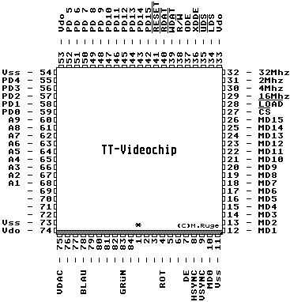

Previous
Next
TOC
OverScan TT030 Einbau
Am TT030 Videochip kommt das zweiadrige Kabel dran. Pin 7 ist ein-
seitig isoliert und wird so eingesetzt das die Isolierung die Kon-
taktfeder vom Sockel berührt. An Pin 9 wird einfach der Kontakt
zwischen die Sockelkontaktfeder und IC-Beinchen geschoben.
Die freie Ader kommt an den Anschluß 87 der Reihe C vom Steckverbin-
der J502 (Erweiterungssteckplatz für ST Ramkarte). Von rechts nach
links gezählt ist es Kontakt 10 der an Ihnen am nächsten gelegenen
Kontaktreihe.

Sollte die OverScan TT030 Grafikerweiterung mal streiken, sollte man
den Stecker von der OverScan Platine mal abziehen und die außeren
Pins mit einem Stückchen Draht miteinander verbinden.
Das sollte dann so aussehen:
------|---|-----|
------|
|
|
------|---|-----|
Kabel
Brücke
Stecker
Kapitel OverScan TT030 Einbau, Seite 1